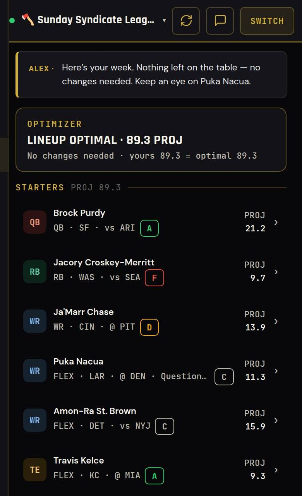
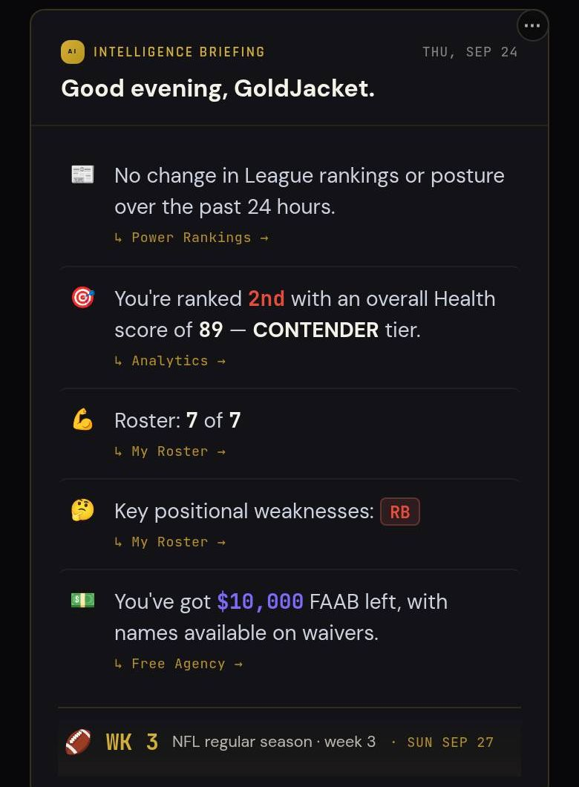
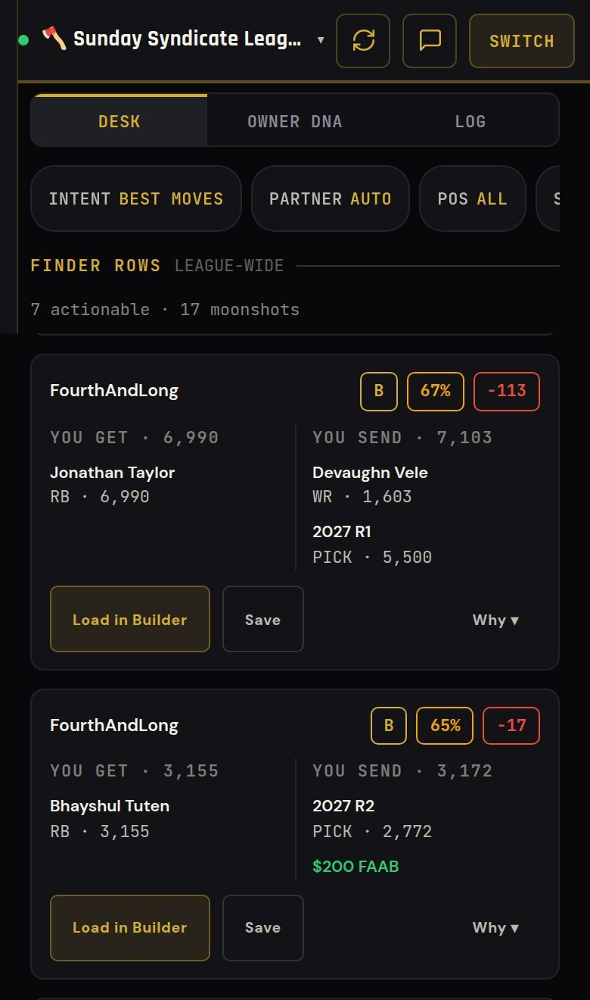
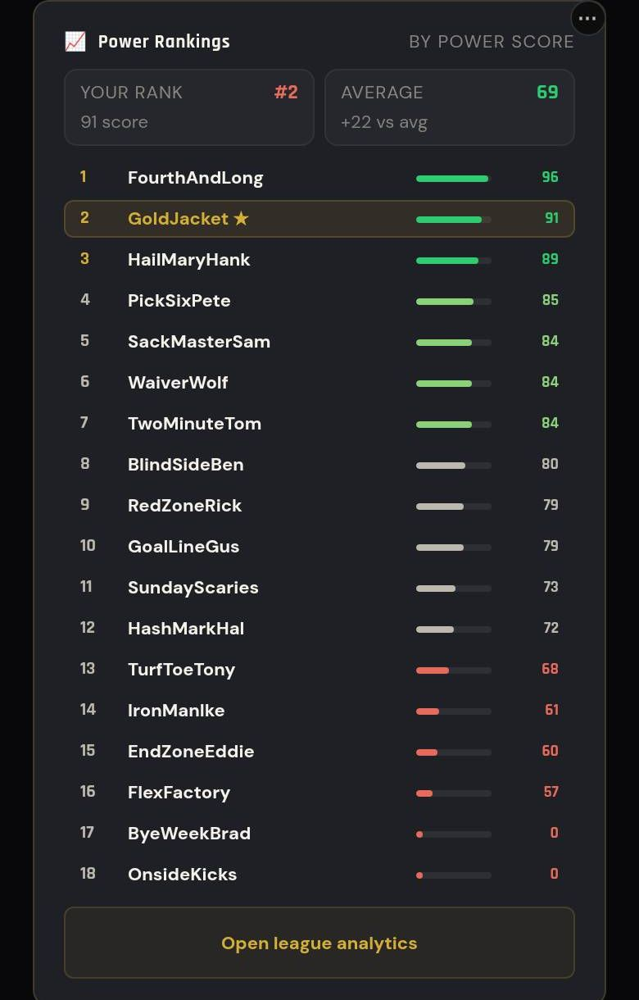

Game Day
Start the Right Players
Sleeper's own projections for your scoring, a matchup grade on every starter, and the exact swaps that add points.
Stop playing by other people's rules. Type your Sleeper name. DHQ reads your league and shows you who to start, which trades your leaguemates will take, and where you really stand. Because Winning Matters 🏆
Free. No account, no password. Dynasty, redraft, superflex and IDP.
Become a founding member. Everything in DHQ is free this season. Create a free account before March 1, 2027 and your first year of full DHQ is free when paid plans start. Create free account →

Real app screens · names changed · Week 3

Sleeper's own projections for your scoring, a matchup grade on every starter, and the exact swaps that add points.

Offers built around what you need and what each owner in your league tends to accept.

Every team in your league ranked, with your spot highlighted. Updated every week.
Become a founding member. Your first year of full DHQ is free when paid plans start.
Step 1 of 2 — next you'll connect your leagues (Sleeper, MFL or ESPN).